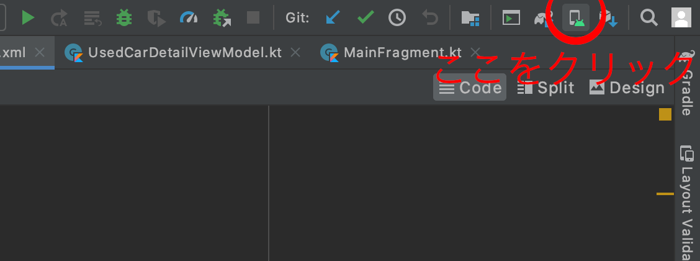
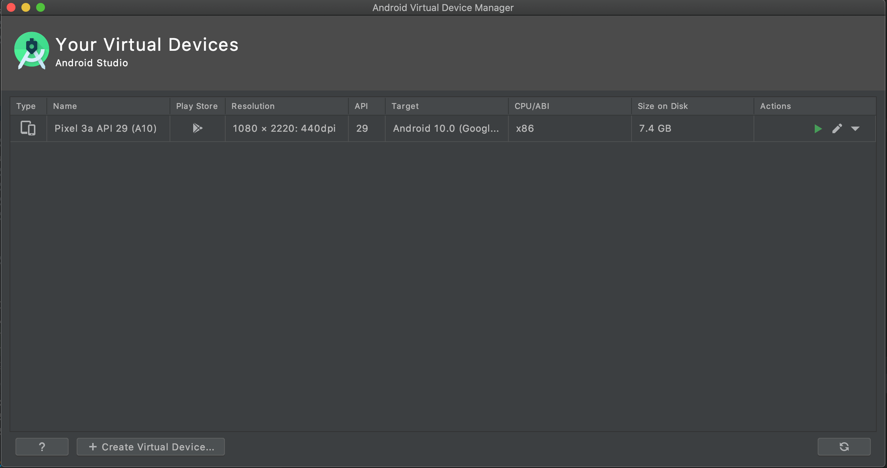

この勉強会でやること
- Kotlinで……
- 中途採用者向けチュートリアルアプリ(カーセンサー中古車検索アプリ)を作成する
- ちょっと難しいけど
MVVM とDataBinding とViewBinding も使う
この勉強会でやってほしいこと
- Kotlinちょっとでも覚える
MVVM アーキテクチャに触れる- ついでにAndroidの
DataBinding と ViewBinding にも触れてみる
アジェンダ
- 用意するもの
- とりあえず完成物の確認
- MVVMアーキテクチャの説明
DataBinding / ViewBinding の説明- 実際のプロジェクトの用意
アジェンダ
- API通信インターフェース (
Repository) の作成
- 最初のビュー (
MainFragment / MainViewModel) の作成
- 2つめのビュー (
UsedCarDetailFragment / UsedCarDetailViewModel) の作成
- 参考資料等
用意するもの
AndroidStudioが動くPC
- macOSでも
- Windowsでも
- お好きなLinuxでも
- AndroidStudioが動けばなんでもいいです
AVD Manager も動ける環境が好ましいです(OR 実機でデバッグだ)
用意するもの
AndroidStudio
AVD Manager でデバッグ用のエミュレートマシンも用意しておくとGOODですね！
用意するもの
デバッグ用実機またはエミュレートマシン

用意するもの
デバッグ用実機またはエミュレートマシン

用意するもの
カーセンサーAPIアクセス用トークンの取得
- 以下から登録を行っておいてください
- 忘れた方は
-仕方なく 赤倉の持っているIDを配布しますので、しばらくお待ちください
MVVMアーキテクチャの説明
MVVMアーキテクチャとは
- Model-View-ViewModel Architecture
- GUIアプリケーションの実装手法のひとつ
- MVCの派生パターンであり「プレゼンテーションとドメインを分離」する
- この手法によってアプリケーション開発における保守性・開発生産性に寄与する
MVVMアーキテクチャとは
Model
- アプリケーションの ドメイン(問題領域) を取り扱う
- そのアプリケーションが扱う領域のデータと手続き(ビジネスロジック)を表現する要素
- ビジネスロジック(ショッピングの合計額や送料を計算するなど）
MVVMアーキテクチャとは
Model
- 多くのアプリケーションではDBアクセスやサーバ側との通信ロジックなどが含まれている
- MVVMの概念ではMVCの概念と同様に、データの（UI以外の）入出力は取り扱わないので、強いて言うならばそれらはModelの中に隠蔽されると考えられる
MVVMアーキテクチャとは
Model
- 一般的にModelはドメインを担当すると言われるがこの言葉だけをもってModelの役割を想像するのは難しい
- Modelの役割は、後述するViewとViewModelの役割以外の部分と考えるのが妥当
MVVMアーキテクチャとは
View
- アプリケーションの扱うデータをユーザーが見るのに適した形で表示し、ユーザーからの入力を受け取る要素
- すなわちUIへの入力とUIからの出力を担当する
- 後述するViewModelに含まれたデータをデータバインディング機構のようなものを通じて自動的に描画するだけで自身の役割を果たす
- Viewそのものに複雑なロジックと状態を持たないのがMVVMのViewの特徴
MVVMアーキテクチャとは
ViewModel
- Viewを描画するための状態の保持と、Viewから受け取った入力を適切な形に変換してModelに伝達する役目を持つ
- すなわちViewとModelの間の情報の伝達と、Viewのための状態保持のみを役割とする要素である
MVVMアーキテクチャとは
ViewModel
- Viewとの通信はデータバインディング機構のような仕組みを通じて行うため、ViewModelの変更は開発者から見て自動的にViewに反映される
DataBinding / ViewBinding の説明
DataBinding / ViewBinding の説明
- データバインディングは、データと対象を結びつけ、データあるいは対象の変更を暗示的にもう一方の変更へ反映すること、それを実現する仕組みのこと
DataBinding / ViewBinding の説明
- データバインディングには変更反映の方向性によって以下の2種類が存在する
- 方向バインディング(1way): data ⇒ target あるいは target ⇒ data のみの一方向な暗示的反映
- 双方向バインディング(2way): data ⇔ target の双方向な暗示的反映
API通信インターフェース (Repository) の作成
最初のビュー (MainFragment / MainViewModel) の作成
2つめのビュー (UsedCarDetailFragment / UsedCarDetailViewModel) の作成